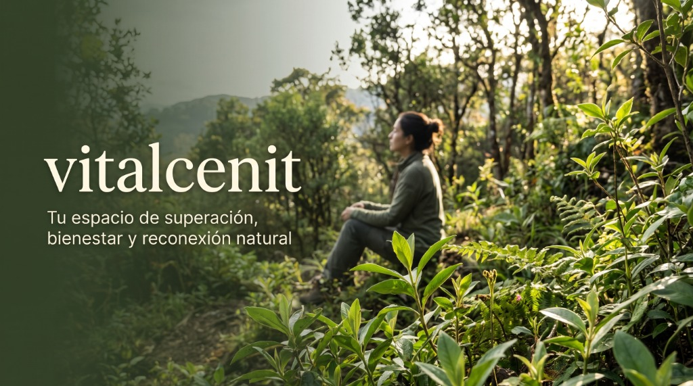
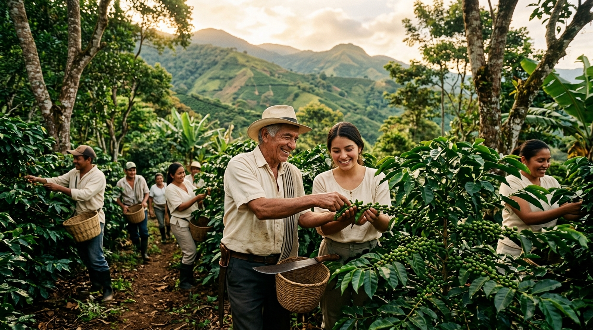
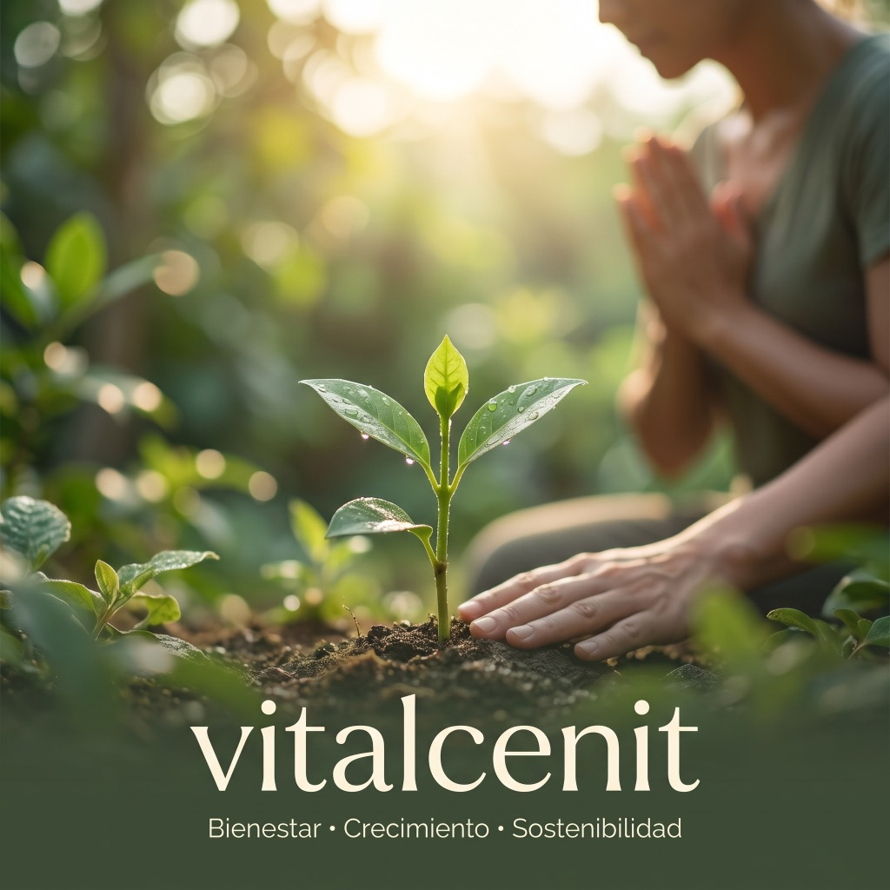
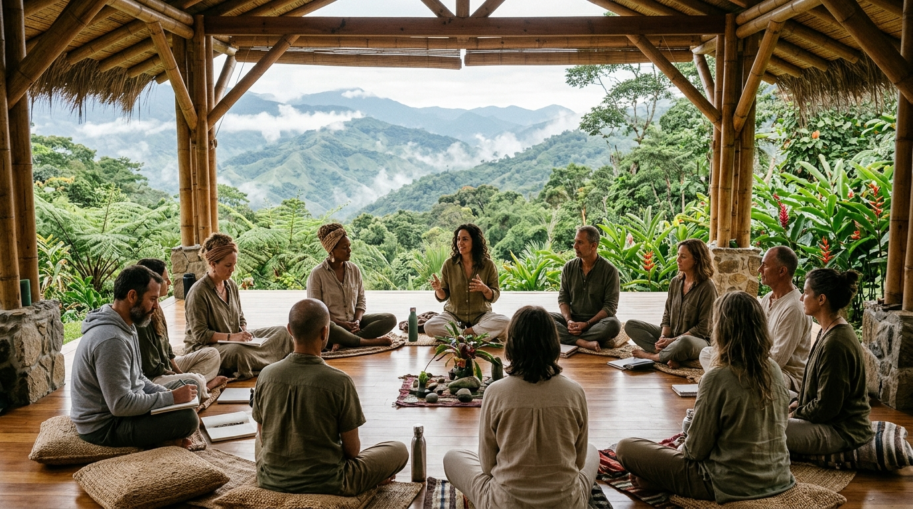
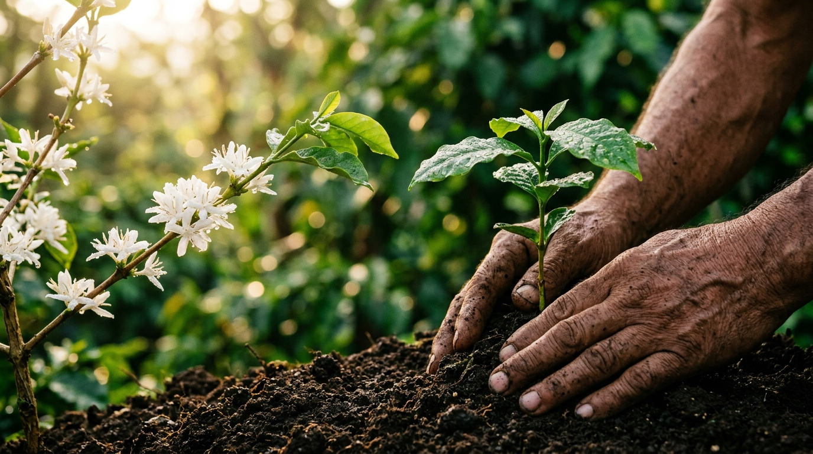

En Vitalcenit promovemos el desarrollo personal y profesional en armonía con el medio ambiente, cultivando hábitos conscientes para florecer desde adentro. Una iniciativa social y comunitaria arraigada en Santander.

Hábitos conscientes, salud emocional y sostenibilidad activa.

Vitalcenit nace como una iniciativa estratégica y social respaldada por la COOPERATIVA DE CAFICULTORES DE SANTANDER LTDA, constituida legalmente como Entidad Sin Ánimo de Lucro (ESAL).
Creemos que el progreso auténtico no se limita al rendimiento material; brota del equilibrio interior de cada persona y de su convivencia respetuosa con el entorno vivo. En Vitalcenit tejemos puentes entre el crecimiento personal, las competencias profesionales y la mayordomía ambiental, fomentando comunidades conscientes, resilientes y solidarias.
"Trabajamos día a día por la dignidad, la salud integral de las familias y la salvaguarda de nuestras cuencas y montañas andinas."
Un enfoque tridimensional que integra el ser, el saber y el hacer en armonía con los ciclos naturales.
Fomentamos la salud emocional, la serenidad mental y el balance físico. A través de la autorregulación, la respiración consciente y la pausa activa, facilitamos herramientas para gestionar el estrés cotidiano.
Acompañamos a personas, familias campesinas y profesionales en el fortalecimiento de habilidades blandas, liderazgo ético, comunicación asertiva y resolución colaborativa de desafíos.
Reconectamos a los seres humanos con la tierra viva. Propiciamos la conservación ecológica, la agricultura bajo sombra respetuosa con la biodiversidad y el consumo responsable.
Experiencias formativas y vivenciales creadas con propósito social y sin ánimo de lucro.

Salud & ConscienciaCiclos vivenciales de meditación guiada, gestión de emociones y nutrición consciente en entornos naturales de San Gil. Aprende a sincronizar tus ritmos con la sabiduría de la naturaleza.

Superación PersonalCapacitación integral en habilidades de liderazgo transformacional, inteligencia emocional y trabajo en equipo solidario para líderes comunitarios, jóvenes y asociados de la región.

Agroecología & TierraJornadas participativas de siembra comunitaria, abonos orgánicos, restauración de suelos y preservación del ecosistema cafetero tradicional de Santander.
Acompañamiento psicosocial y fortalecimiento de la economía solidaria para las familias caficultoras, incentivando la permanencia digna en el campo y la cohesión comunitaria.
Imágenes que reflejan la autenticidad, la calidez y el compromiso de Vitalcenit con la comunidad.
Participa en nuestras jornadas de bienestar y voluntariado social.
Contáctanos HoyEn Vitalcenit y la Cooperativa de Caficultores de Santander Ltda garantizamos el pleno apego a la normatividad colombiana, la protección rigurosa de datos y la claridad en la participación comunitaria.
Tratamiento, almacenamiento y protección de datos personales en estricto cumplimiento de la Ley 1581 de 2012 (Habeas Data) y Decretos Reglamentarios 1377 de 2013 y 1074 de 2015 de Colombia.
Leer Política de PrivacidadReglamento de uso del portal web oficial, normas de navegación, propiedad intelectual, marcas registradas y responsabilidades legales bajo la legislación colombiana y de la ESAL.
Ver Términos y CondicionesCondiciones generales de acceso y participación en los talleres vivenciales de bienestar, retiros ecológicos, escuela de liderazgo y proyectos sociales de la entidad sin ánimo de lucro.
Consultar Términos del ServicioResolvemos las principales inquietudes sobre nuestra identidad, misión y mecanismos de participación.
Estamos a tu disposición para orientarte sobre nuestros programas, convocatorias y proyectos de bienestar.
Completa el siguiente formulario y un coordinador se comunicará contigo: